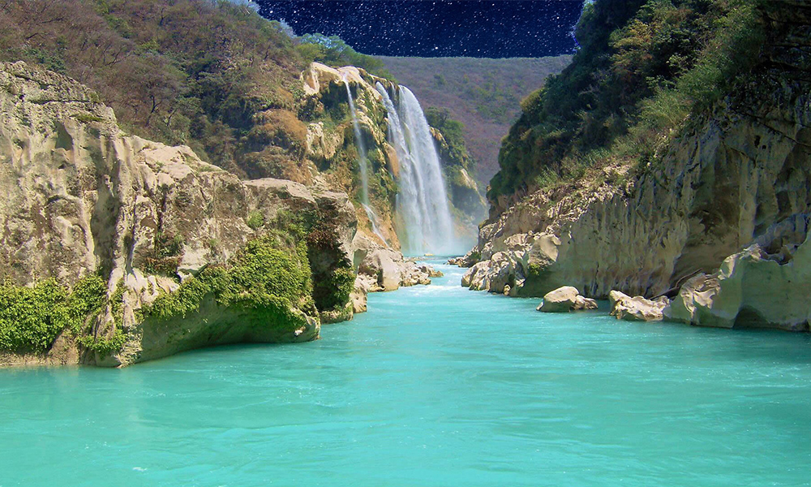

Cascada de Tamul
San Luis Potosí
La cascada de Tamul es una impresionante cascada de agua ubicada en el estado de San Luis Potosí, en el centro-norte de México. Se encuentra en el río Santa María, cerca de la localidad de Tanchachín, y tiene una altura de 105 metros.
La cascada de Tamul es una de las más impresionantes de México debido a su tamaño y belleza natural. Para llegar a la cascada, los visitantes deben tomar un recorrido en bote por el río Santa María, que ofrece hermosas vistas del paisaje rodeado, incluyendo acantilados de piedra caliza, cuevas y formaciones rocosas.
Una vez que se llega a la base de la cascada de Tamul, los visitantes pueden nadar en las aguas cristalinas o simplemente admirar la cascada desde la orilla. También hay un área de picnic cercana para aquellos que deseen disfrutar de un picnic o una comida al aire libre.
La mejor época para visitar la cascada de Tamul es durante la temporada seca, que va de noviembre a mayo. Durante la temporada de lluvias, de junio a octubre, el río Santa María puede crecer mucho y el recorrido en bote puede ser más peligroso.
La cascada de Tamul es un destino popular para los amantes de la naturaleza, los aventureros y los fotógrafos. Es un lugar ideal para escapar de la ciudad y disfrutar de la belleza natural de México.